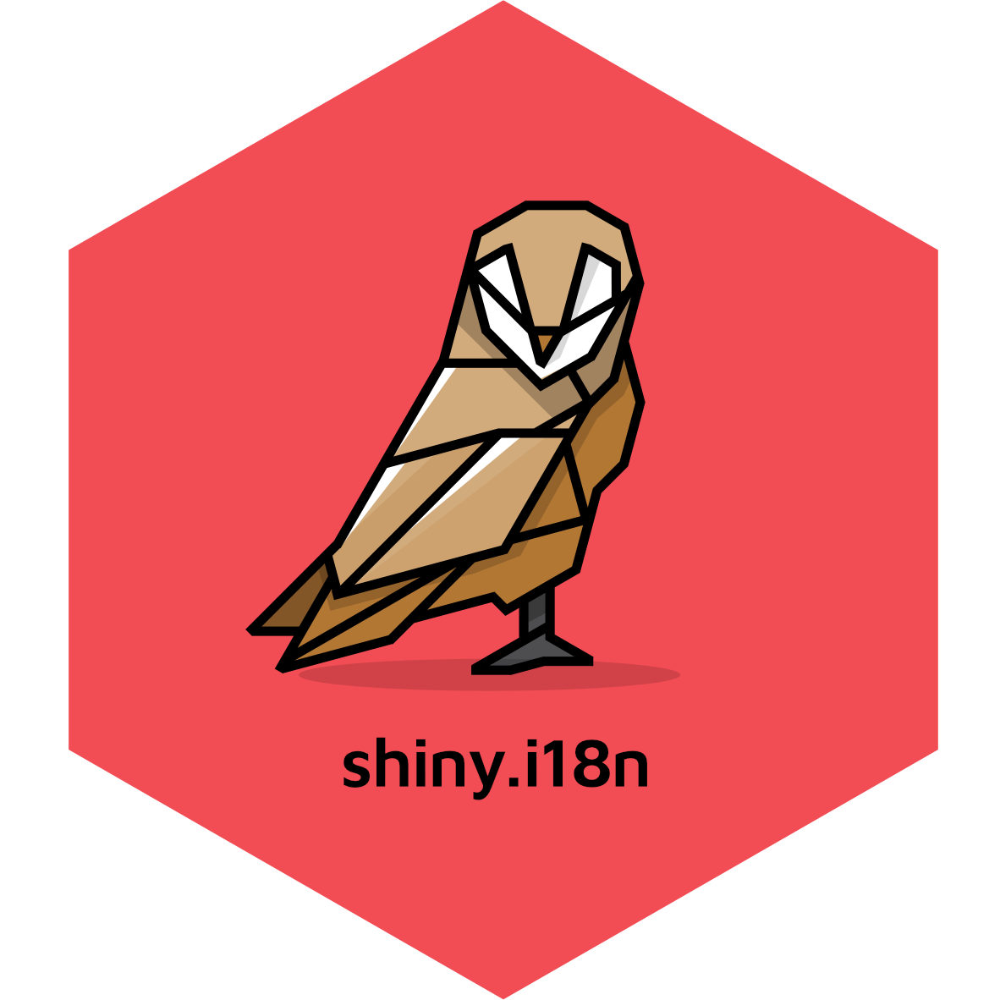
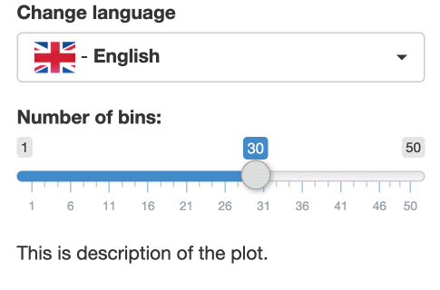

shiny.i18n 
Shiny applications internationalization made easy!
Using it is very simple: just prepare your translation files in one of the supported formats, read them into your app using user-friendly shiny.i18n interface and surround your expressions to translate by a translator tag. Thanks to that your app will remain neat and readable.
Actually, you can use shiny.i18n as a standalone R package - shiny app is just a perfect use-case example.
Change languages and formats easy with shiny.i18n.
How to install?
Stable version:
install.packages("shiny.i18n")Development version:
remotes::install_github("Appsilon/shiny.i18n")Examples

See shiny.i18n in action live
You can find some basic examples in examples folder:
Using i18n object with CSV translation files or JSON translation files.
Live language change on the browser side or with the server function renderUI.
Example of translation data format.
shiny.i18n works seamlessly with Quarto.
shiny.i18n also works when used in interactive Quarto + Shiny instances. Alternatively, you can also experience a deployed version.
Translation file format
Currently shiny.i18n supports two translation formats:
-
csv - where each translation is in separate file
translation_<LANGUAGE-CODE>.csvcontaining two columns: key translation, language to which it needs to be translated. Example oftranslation_pl.csvfor Polish language you may find here:inst/examples/data/translation_pl.csv. You load the data by passing the path to folder containing all the csv files:
Translator$new(translation_csvs_path = "...")-
json - single json file
translation.jsonwith mandatory fields:"languages"with list of all language codes and"translation"with list of dictionaries assigning each translation to a language code. Example of such a json file for Polish language you may find here:inst/examples/data/translation.json. You load the data by passing the path to json file.
Translator$new(translation_json_path = "...")
shiny.i18n and rhino
shiny.i18n can be used to add live language change feature to Shiny applications built using Rhino framework. For more details, check this tutorial.
How to contribute?
If you want to contribute to this project please submit a regular PR, once you’re done with a new feature or bug fix.
Reporting a bug is also helpful - please use GitHub issues and describe your problem as detailed as possible.
Appsilon

Appsilon is a Posit (formerly RStudio) Full Service Certified Partner.
Learn more at appsilon.com.
Get in touch opensource@appsilon.com
Check our Open Source tools.